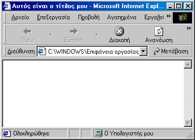

Βασικά χαρακτηριστικά ενός <tag>
Η HTML είναι μία γλώσσα σήμανσης κειμένου. Αυτό γίνεται με την βοήθεια "HTML tags".
Δεν είναι απαραίτητο μία σελίδα να έχει κείμενο. Μπορεί να περιλαμβάνει μόνο tags.
Ένα tag αρχίζει με ένα σύμβολο '<' και τερματίζεται με ένα σύμβολο '>'. Μεταξύ αυτών
τοποθετείται κείμενο που καθορίζει ποιο tag χρησιμοποιείται. Παράδειγμα είναι το tag <html>,
που δηλώνει την αρχή ενός αρχείου html. To tag αποτελείται από δύο τμήματα, το tag αρχής
και το tag τέλους. Αυτό που βρίσκεται ανάμεσα και μπορεί να επηρεαστεί, επηρεάζεται από το
εφέ που έχει το tag. Για παράδειγμα το κείμενο ανάμεσα στα tag μπορεί να γίνει πράσινο αλλά
η εικόνα θα μείνει στα ίδια χρώματα για η html δεν αλλάζει τα χρώματα εικόνων. Το tag του
τέλους είναι ίδιο με το tag της αρχής εκτός από την ύπαρξη ενός συμβόλου '/', ανάμεσα
στο '<' και το πρώτο γράμμα του tag. Για παράδειγμα, έχουμε αναφέρει ότι το tag <html>
δείχνει την αρχή ενός εγγράφου html, το αντίστοιχο tag τέλους είναι το </html>. Ότι βρίσκεται
ανάμεσα τους είναι τμήμα του εγγράφου html.
Tag <head></head>
Αυτά τα tags δείχνουν την αρχή και το τέλος της επικεφαλίδας ενός εγγράφου HTML document.
Δεν είναι απαραίτητο στοιχείο ενός εγγράφου HTML, αλλά συνήθως αυξάνει την αποτελεσματικότητά του.
Το πιο συνηθισμένο tag του <head> tag είναι το <title>. Παρέχει στην σελίδα με ένα τίτλο που θα
εμφανίζεται στη γραμμή τίτλου του browser. Το <title> tag είναι αρκετά απλό. Παρακάτω δίνεται η
εμφάνιση ενός απλού εγγράφου HTML που χρησιμοποιεί του <title> tag.

<html>
<head>
<title>
Αυτός είναι ο τίτλος μου
</title>
</head>
</html>
Tag <meta>
Τα Meta tags περιλαμβάνονται επίσης στην επικεφαλίδα ενός εγγράφου html. Αυτά τα tags περιλαμβάνουν πληροφορίες για το site.
Δεν είναι απαραίτητα αλλά ορισμένες μηχανές αναζήτησης τα χρησιμοποιούν για να καταλάβουν το περιεχόμενο του site.
Κάθε τμήμα πληροφορίας περιέχεται σε ξεχωριστό tag. Τα κυριότερα τμήματα είναι τα keywords (λέξεις κλειδιά) και
description (περιγραφή).
<meta name=keywords content= "ενδιαφέροντα, προσωπικά στοιχεία">
<meta name=description content="Ελάτε να με γνωρίσετε από κοντά">
Αυτά τα tags μπορούν να βρίσκονται οπουδήποτε μεταξύ των tags <head> και </head>.
Tag <body></body>
Στο προηγούμενο παράδειγμα υπάρχει μία λευκή περιοχή στο μέρος όπου πρέπει να εμφανίζονται τα περιεχόμενα της σελίδας.
Τα περιεχόμενα της σελίδας τοποθετούνται μέσα στο tag <body>. Ανάμεσα στα <body> και </body> τοποθετούνται το κείμενο, οι εικόνες και ότι άλλο θέλουμε να περιλαμβάνει η σελίδα.